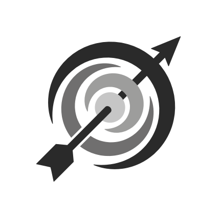

<bla-navigation-dialog [config]="config">
  <div class="vereinsmannschaftenuebersicht-page">

    <!-- Loading indicator -->
    <div *ngIf="loading">{{"VEREINSMANNSCHAFTENUEBERSICHT.STATUS.LOADING" | translate}}</div>

    <!-- Mannschaft anzeigen -->
    <div class="verein-card" *ngIf="!loading && verein">
      <!-- Vereinslogo -->
      <div class="logo">
        <picture>
          <!-- Moderne Browser: prüfe zuerst das Haupt‑Logo -->
          <source srcset="{{this.verein.icon}}" type="image/png">

          <!-- Fallback‑Bild, das immer geladen wird, wenn das erste nicht verfügbar ist -->
          
        </picture>
      </div>
      <div class="info">
        <!-- Vereinsname -->
        <h2>{{ verein.name || 'unbekannter Verein' }} </h2>
        <!-- Regionsname -->
        <h3>{{this.verein.regionName}}</h3>
      </div>
    </div>
    <!-- Webseite -->
    <div>
      <p style="margin-top:20px">
        <a [href]="verein?.website ? verein.website : null"
           [class.disabled-link]="!verein?.website"
           target="_blank"
           rel="noopener noreferrer">
          {{ verein?.website ? verein.website : 'keine Website vorhanden' }}
        </a>
      </p>
    </div>
    <!-- Beschreibung -->
    <div>
        <p>{{this.verein.description|| 'keine Beschreibung dieses Vereins verfügbar'}}</p>
    </div>
    <!-- Tabelle der Mannschaften -->
    <div class="row" style="padding: 1em">
      <bla-data-table
        (onRowEntry)="getSelectedRow($event)"
        [config]="config_table"
        [loading]="loadingTable"
        [rows]="rows">
      </bla-data-table>
    </div>
  </div>
</bla-navigation-dialog>
